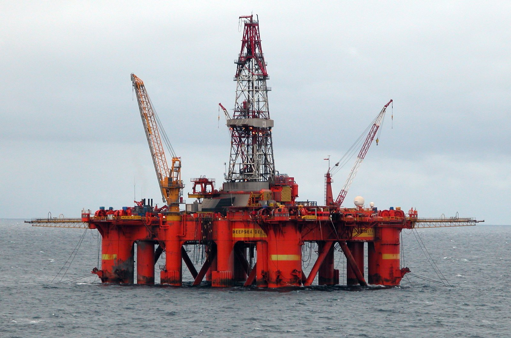

Piazza Affari chiude agosto sulla parità assoluta: il FTSE MIB segna −0,01% a 52.612 punti, un risultato che nasconde una giornata fortemente biforcuta. Da un lato, i titoli energetici volano sull'onda dell'impennata del petrolio provocata dall'escalation militare tra USA e Iran nello Stretto di Hormuz. Dall'altro, difesa e industriale cedono terreno, con Avio in calo del −2,9% e Leonardo del −2,18%.
Il driver del giorno: il petrolio sopra $85 (WTI) e $90 (Brent)
Il fattore che ha ridisegnato la classifica di Piazza Affari oggi è il greggio. Il Brent sale del +2,8% a $90,58 al barile, il WTI si porta a $84,99. L'impennata è diretta conseguenza degli attacchi militari USA contro le installazioni iraniane sull'isola di Larak, nello Stretto di Hormuz — un tratto strategico attraverso cui transita circa il 20% delle forniture mondiali di petrolio. L'Iran ha richiuso il canale a marzo; la ripresa del conflitto dopo un mese di pausa riaccende i timori per le forniture.
💡 Impara: Oil Sensitivity (Sensibilità al Petrolio)
Le società dell'industria petrolifera si dividono in due categorie con sensibilità opposta al prezzo del greggio. Le upstream (estrazione e produzione, come Eni) guadagnano direttamente da prezzi alti, perché vendono il greggio a prezzi più elevati. Le oilfield services (servizi agli impianti, come Saipem e Tenaris) beneficiano indirettamente: quando il petrolio è caro, le compagnie petrolifere aumentano gli investimenti negli impianti, commissionando più lavoro a chi li costruisce e li mantiene. Entrambe le categorie hanno oggi performato in modo positivo — ma per motivi leggermente diversi.
I protagonisti della seduta: il podio dell'energia
| Titolo | Variazione (giornaliera) | Categoria | Motivo |
|---|---|---|---|
| Tenaris | +2,97% | Oilfield services | Petrolio alto → più investimenti in impianti |
| Saipem | +2,29% | Engineering oil & gas | Commesse E&P in espansione con petrolio alto |
| Eni | +2,26% | Major integrata | Margini upstream diretti dal Brent a $90,58 |
| Avio | −2,9% | Aerospazio/difesa | Rotazione settoriale e prese di profitto |
| Leonardo | −2,18% | Difesa/aerospazio | Vendite nonostante contesto geopolitico teso |
Il paradosso di Leonardo: difesa in rosso in un giorno di crisi
La debolezza di Leonardo nel giorno di una crisi geopolitica potrebbe sembrare controintuitiva. Normalmente i titoli della difesa tendono a salire quando le tensioni internazionali si intensificano, perché i governi aumentano la spesa militare. Tuttavia, diversi fattori possono spiegare il calo odierno: prese di profitto dopo un rally recente, pressioni sui margini legate ai costi di approvvigionamento, o semplicemente la rotazione del capitale verso il settore energetico — dove il beneficio del petrolio alto è più immediato e lineare.
💡 Impara: Sector Rotation (Rotazione Settoriale)
La Sector Rotation (rotazione settoriale) è il fenomeno per cui i capitali degli investitori si spostano da un settore all'altro in risposta a cambiamenti macroeconomici o di sentiment. Quando il petrolio sale bruscamente, i fondi tendono a sovrappesare il settore energetico, riducendo l'esposizione ad altri settori (come la difesa o i finanziari) per liberare liquidità. Questo spostamento può far scendere titoli anche "buoni" semplicemente perché il mercato preferisce stare altrove per un periodo. La rotazione non riflette necessariamente il valore fondamentale delle singole aziende.
FTSE MIB: quadro mensile e andamento comparato
Il FTSE MIB chiude agosto 2026 con un saldo mensile leggermente positivo, consolidando la posizione sopra i 52.000 punti. L'indice aveva toccato i massimi del mese il 26 agosto a 52.882 punti prima di cedere terreno nelle ultime due sedute. La performance è stata penalizzata dalla debolezza delle banche (che hanno risposto male all'inversione di rotta della Fed dopo Jackson Hole) e di alcuni titoli ciclici.
| Indice europeo | Chiusura 31 agosto | Max agosto 2026 |
|---|---|---|
| FTSE MIB | 52.612 (−0,01%) | 52.882 (26 ago) |
| Brent Crude | $90,58 (+2,8%) | — |
| WTI Crude | $84,99 (~+2,5%) | — |
Cosa osservare a settembre per Piazza Affari
Per settembre, i principali fattori da tenere d'occhio per il mercato italiano sono:
1. Decisione Fed (settembre) — dopo il discorso di Warsh a Jackson Hole, il mercato prezza ora una probabilità del 57% di rialzo dei tassi. Un eventuale rialzo penalizzerebbe le banche italiane (BTP più cari da finanziare) e i titoli ciclici.
2. Stretto di Hormuz — la continuazione del conflitto Iran-USA manterrà il petrolio su livelli elevati, sostenendo Eni, Saipem e Tenaris ma alzando i costi energetici per i settori industriali.
3. Agenda macro Europa — dati PMI, inflazione europea e eventuali decisioni BCE condizioneranno il sentiment sulle banche e sui BTP.